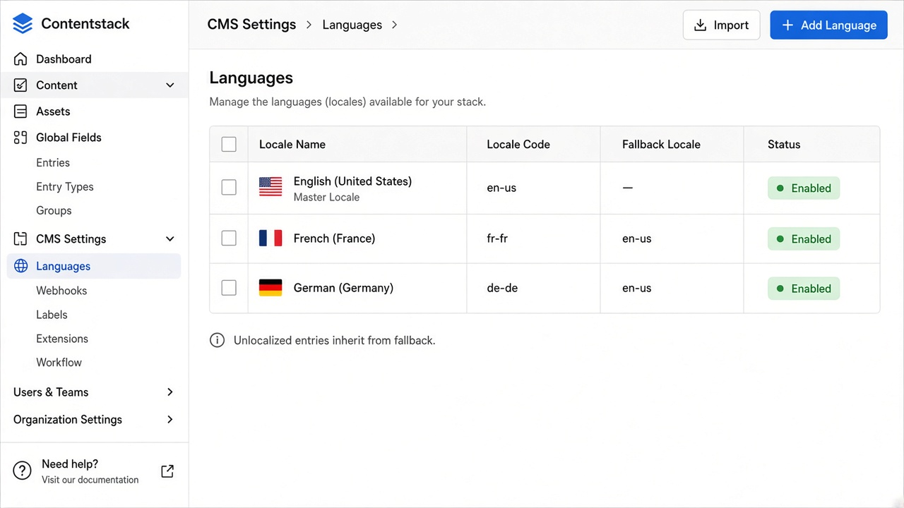

Home / Labs / 06
Lab 06 — Localization and fallback
Time: 60 minutes
Layer: CMS + API
Exit: You can predict CDA output for en-us, localized fr-fr, and unlocalized de-de.
Use [QA-FIXTURE] Linen Overshirt (published on staging).


---
1. Confirm field localization
On product:
- Localizable:
title,description - Not localizable:
slug,sku,price,category,hero_image
If category was accidentally localizable, that is a modeling defect. Do not “fix” a client model in labs without asking; on Horizon Market, correct it.
---
2. Localize French
- Open the product. Switch language to French - France.
- The UI shows inherited
en-usvalues until you localize. - Localize
titletoSurchemise en lin. - Leave
descriptionunlocalized (still inheriting) or localize it — pick one and write it down. - Do not change SKU (field should be disabled).
- Publish the French entry to staging.
---
3. API matrix
Call CDA with staging token:
| locale | include_fallback | Expected title | Expected SKU |
|---|---|---|---|
en-us | n/a | Linen Overshirt (or current EN) | HM-OSH-001 |
fr-fr | default | Surchemise en lin | HM-OSH-001 |
de-de | on | English title (fallback) | HM-OSH-001 |
de-de | off | Empty / missing localized entry (document actual) | — |
GET {CDA}/v3/content_types/product/entries
?environment=staging
&locale=fr-fr
&query={"slug":"linen-overshirt"}GET {CDA}/v3/content_types/product/entries
?environment=staging
&locale=de-de
&include_fallback=true
&query={"slug":"linen-overshirt"}---
4. Non-localizable integrity
- Change EN price to
139and publish EN staging. - Fetch
fr-fr. Price must be139, not the old price. - If FR still shows
129, you localized price by mistake or published the wrong locale.
---
5. Reference locale trap
- Localize category title to
Habillementonfr-frand publish category FR to staging. - Fetch product
fr-frwithinclude[]=category. - Expected category title:
Habillementif the reference resolves in the requested locale. - If you had made
categorylocalizable on the product and pointed FR at a different category, you would have a silent data bug. Confirm the field is not localizable.
---
6. App-layer note (no app required)
Dates, currency symbols, and RTL are usually app concerns. CMS stores 129 and en-us. File “€ not shown on FR site” as Layer C unless the CMS was supposed to store a formatted string (bad model).
---
Pass
- Matrix filled with real responses
- SKU identical across locales
- DE fallback behaviour documented
- Price change propagated to FR
---